Review the Captcha Challenge in Leisure Link e-Services System(康體通)
Published on June 28, 2022
In my Final Leave at HA, I want to analyze the Leisure Link (康體通) Web Application which is the booking system for leisure venues in Hong Kong, and try to build a bot to book a Badminton Court for me.
Firstly, I was trying to analyze the communication between with front and backend. I hope to build a bot that only needs to communicate with the backend. It can reduce the runtime (Finally, this is difficult for my level. Therefore, I used Selenium. It's not like Instagram :( ).
Facing the first problem, I don't know what's going on about the system can not access via my MacBook, even the Incognito mode. I tried other devices, used VPN, etc. The reboot is a solution after some attempts, but the problem will occur again when accessing the system 2 to 3 times. As a result, this is not a good solution in this case.
Then, I found the jsessionid will be passed to the system when sharing the webpage on my iPhone.
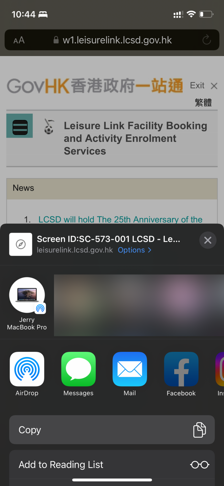The following is the pasted value:
https://w1.leisurelink.lcsd.gov.hk/index/index.jsp;jsessionid=1F11DD222304672E0674016E333266A8
The jsessionId will be stored in Cookies. I assume that will be the session of the system. As a result, I can use the above URL to access the system, and each headless selenium browser generates a different jsessionid using the UUID library.
About the service of "Facility Booking - Basic Version," the system windows will be popped when clicking the button of this service. We need to view the source code to avoid many popup windows on my screen. We know the "openwin()" javascript method will be triggered when the button clicks.
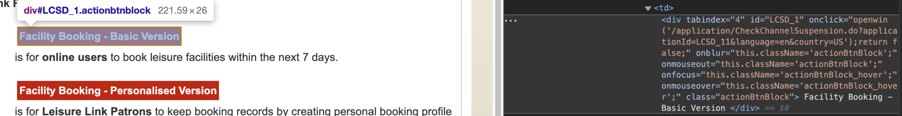The openwin(URL) method:
The open() method of the Window interface loads a specified resource into a new or existing browsing context (that is, tab, window, or <iframe>) under a specified name. (ref: Window.open() - Web APIs | MDN (mozilla.org)
We can paste the URL to the browser simply, and no popup window because there is no other action that will be triggered in openwin() method just pop up the window.
https://w1.leisurelink.lcsd.gov.hk/application/CheckChannelSuspension.do?applicationId=LCSD_11&language=en&country=US
In the first captcha challenge page, we can use the developer tools to know the webpage is split into two parts, including the system layout (blue color) and the captcha challenge generator (red color).
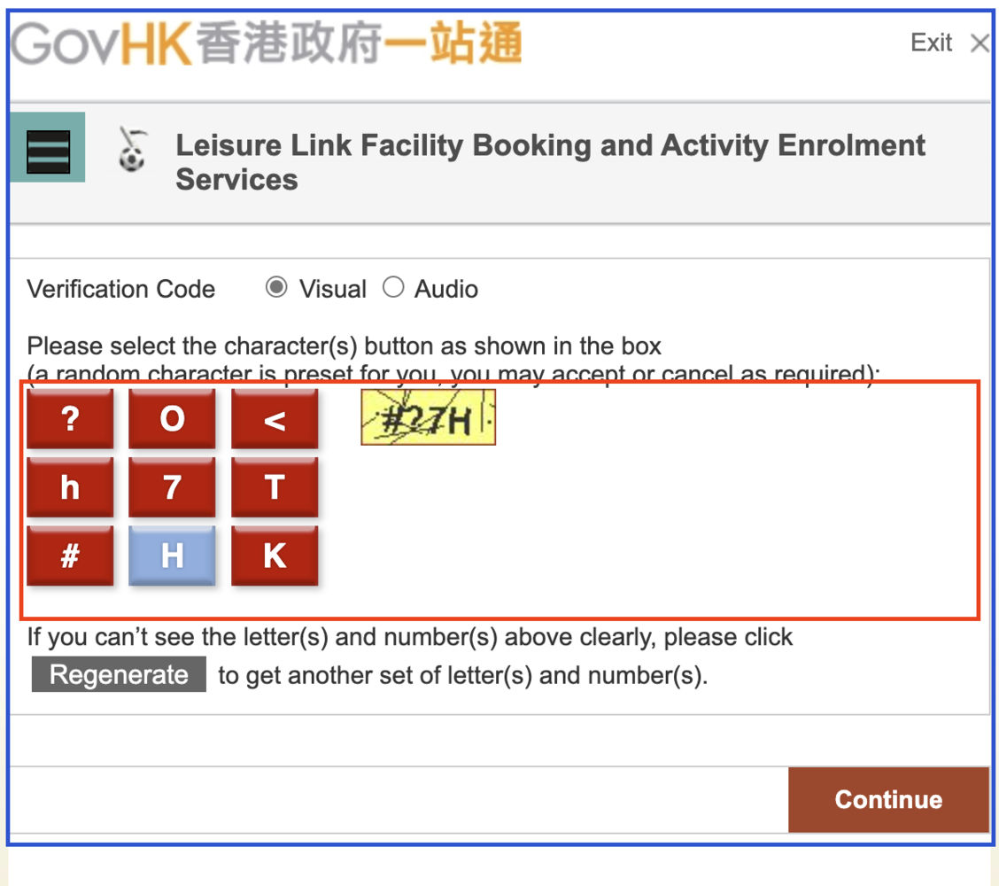
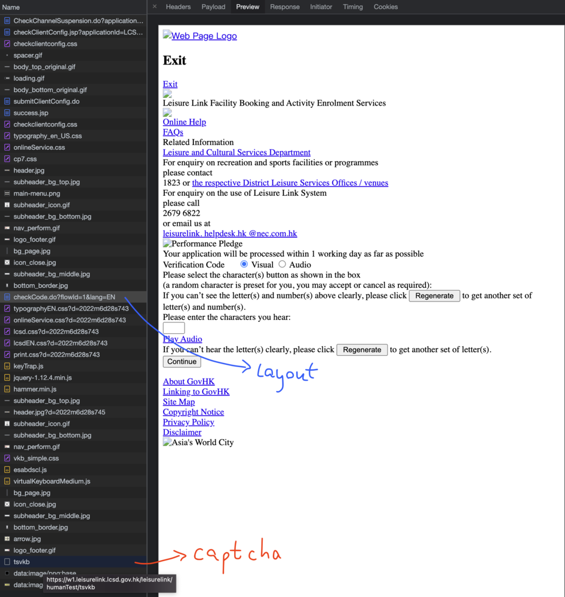
We need to let the computer know the text in the image, which means we may need to clear the unnecessary line segments in the image and use or create the OCR, AI to predict the text in an image.
We need to collect the image of the captcha first. The following is my Python program for collecting the captcha images, which is applied the multithreading to reduce the runtime.
from asyncio import as_completed
from concurrent.futures import ThreadPoolExecutor, as_completed
from requests_html import HTMLSession
from uuid import uuid4
import base64
import threading
output_file = open("./captcha.dat", mode="a+")
lock = threading.Lock()
def get_code():
# create the session
session = HTMLSession()
r = session.post('https://w2.leisurelink.lcsd.gov.hk/leisurelink/humanTest/tsvkb')
# get the img html element
base64_image_src = r.html.xpath('//img/@src')[0]
base64_image = base64_image_src.replace("data:image/jpg;base64,", "")
# get the mapvs which is the character whitelist
mapvs = r.html.xpath("//div[@class='kbLeftColumn'][1]//div[contains(@class, 'kbkey')]/@mapv")
codes = r.html.xpath("//div[@class='kbLeftColumn'][1]//div[contains(@class, 'kbkey')]/text()")
# random image name
id = uuid4()
image_fp = open(f"./data/{id}.jpg", mode="wb")
# save the base64 image to jpg
image_fp.write(base64.b64decode(base64_image))
image_fp.close()
lock.acquire()
# write the image name and the character whitelist to datafile
output_file.write(f"{id}.jpg|{''.join(codes)}|{''.join(mapvs)}\n")
lock.release()
return f"{id}.jpg"
# num: how many image you want to collect
def main(num: int):
# multi thread for collect the image
threads = []
threadPool = ThreadPoolExecutor(max_workers=6)
for _ in range(num):
threads.append(threadPool.submit(get_code))
for future in as_completed(threads):
print(future.result())
output_file.close()
if __name__ == "__main__":
main(num=100)
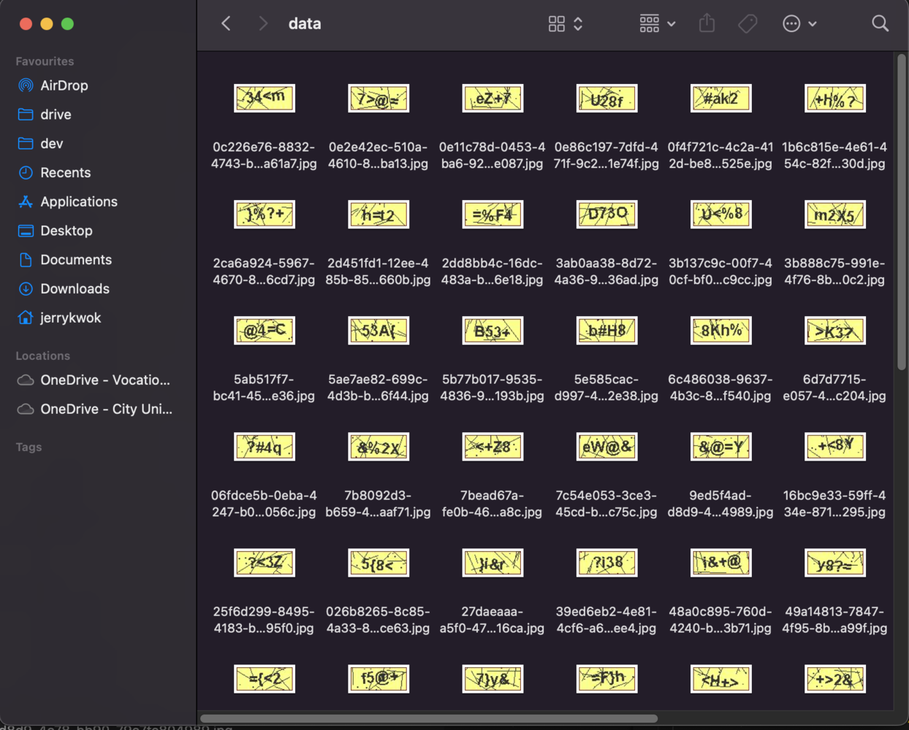
The OpenCV library is great in Computer Vision Library. I converted the image to a gray color and removed the noise using the dilate and erode methods.
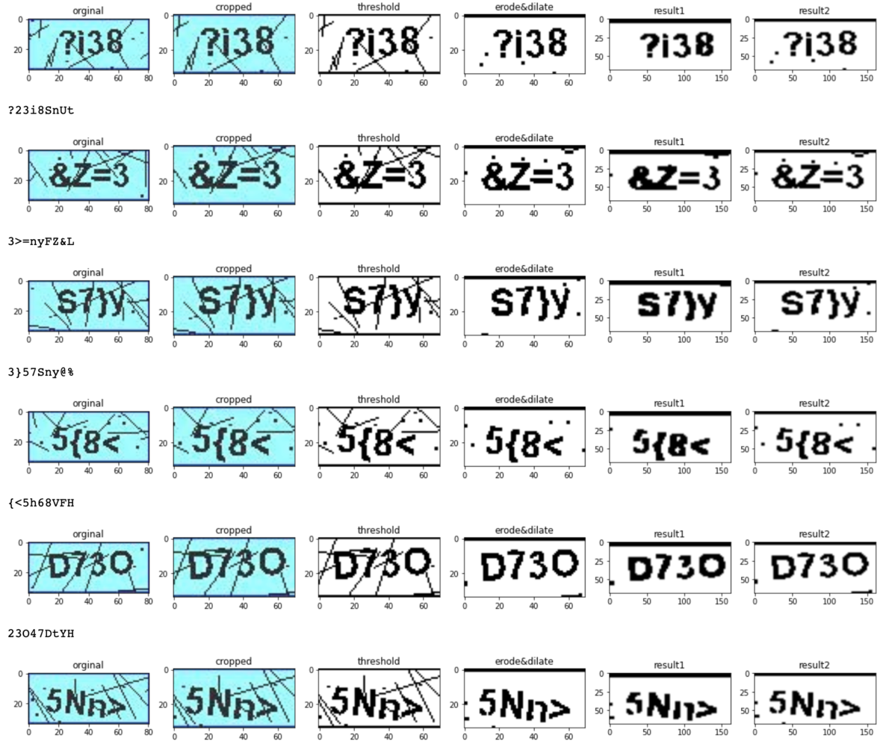jcaptcha_image = cv2.imread(f"./data/{row[0]}")
crop_img = jcaptcha_image[0:35, 5:75]
gray_image = cv2.cvtColor(crop_img, cv2.COLOR_BGR2GRAY)
# erode & dilate
ret, th1 = cv2.threshold(gray_image, 127, 255, cv2.THRESH_BINARY)
kernel = np.ones((2,2), np.uint8)
erosion = cv2.dilate(th1, kernel, iterations = 1)
new_img = cv2.erode(erosion, kernel, iterations = 1)
# result 1
kernel = cv2.getStructuringElement(cv2.MORPH_RECT , (2,2))
opening = cv2.morphologyEx(new_img, cv2.MORPH_DILATE, kernel)
opening = cv2.GaussianBlur(opening, (5,5), 1)
_, opening = cv2.threshold(opening, 175, 295, cv2.THRESH_BINARY)
result_1 = cv2.resize(cv2.erode(opening, np.ones((2,2), np.uint8), iterations = 1), ( 81*2, 34*2))
# result 2
kernel = cv2.getStructuringElement(cv2.MORPH_RECT, (1,1))
opening = cv2.morphologyEx(new_img, cv2.MORPH_OPEN, kernel)
opening = cv2.GaussianBlur(opening, (5,5), 1)
_, opening = cv2.threshold(opening, 125, 255, cv2.THRESH_BINARY)
result_2 = cv2.resize(opening, (dimensions[1]*2, dimensions[0]*2))
The above result may not be the highest performance result. I am a computer vision newbie, and please feel free to let me know what the better solution for that is. Thank you.
Besides, I will use the Tesseract 4.0+ to reduce the workload, which is the Open source OCR Engine based on the LSTM neural network, due to my Final Leave of only 4.5 days :(
pytesseract.image_to_string(opening, config=f'--oem 3 -c tessedit_char_whitelist={row[1]} --psm 10')
For more parameters of the tesseract, please check it from All Tesseract OCR options – Muthukrishnan
Result of the Tesseract:
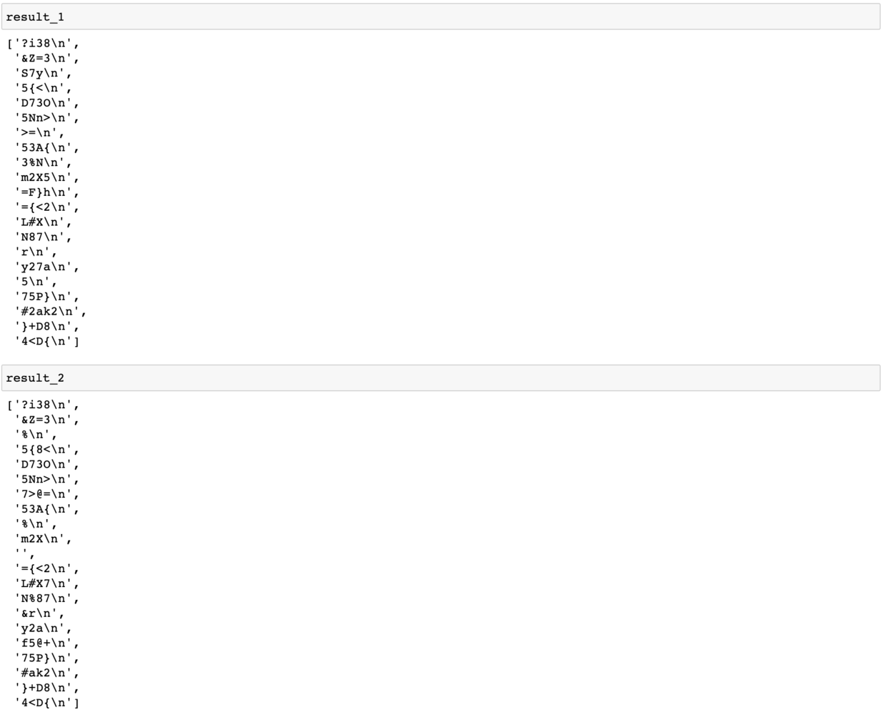After that, we are returning to the booking system. We need to know the system design, such as whether the page will pass the code or encrypted code to the backend. Therefore, we need to submit the Captcha challenge manually and keep checking the workflow in the Network via the developer tools. The following parameters will be passed when clicking the continue button:
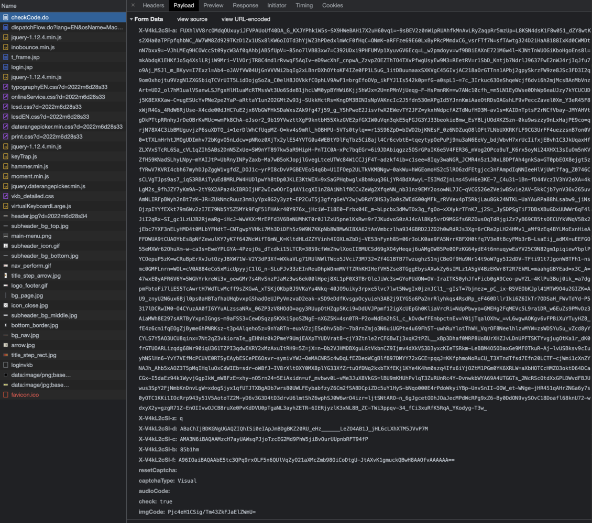We don't know the keys of X-V4kL2cSl-a, X-V4kL2cSl-z, X-V4kL2cSl-d, X-V4kL2cSl-c, X-V4kL2cSl-b, X-V4kL2cSl-f in the submitted form. In addition, the imgCode is encrypted. We need to analyze the challenge page.
In the Continue button, the onSubmiteForm(FormHTMLElement) JavaScript method will be triggered
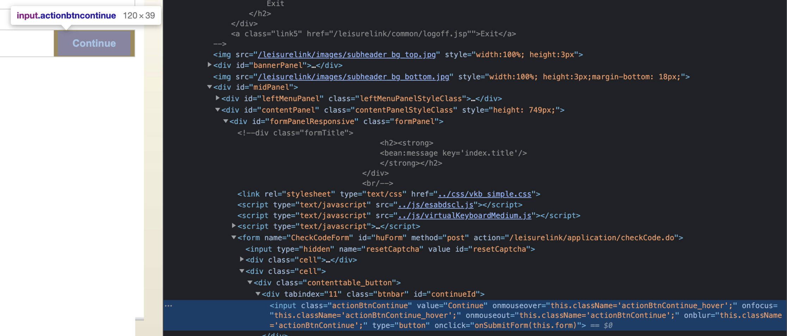The procvkb("imgCode", form) will be called in onSubmitForm()
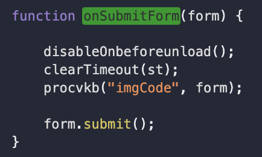The procvkb() cannot search in the HTML Element, which means this method is imported from another javascript file (virtualKeyboardMedium.js)
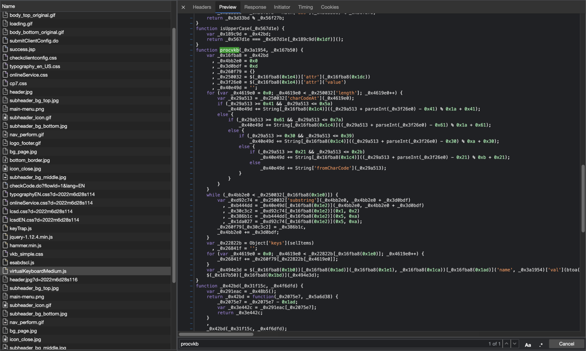Most code is changed to Address, which needs much time to reverse, and I cannot find the generator for key X-V4kL2cSl-*. Therefore, I give up creating the backend bot. The selenium web driver will use to render the HTML and execute the JavaScript. The below code will click the captcha key button and call the onSubmiteForm() method.
# clear selected key
driver.execute_script('''
for(const ele of document.getElementsByClassName("red_selected")){
ele.click();
}
''')
# click the captcha key
js_img_codes = ",".join([ f"'{c}'" for c in predict_img_code]
driver.execute_script('''
for(const ele of document.getElementsByClassName("kbkey")){{
if([{js_img_codes}].includes(ele.innerText)){{
ele.click();
}}
}}
'''.format(js_img_codes=js_img_codes)))
# submit the form
driver.execute_script('''
const form = document.getElementById('hoForm');
onSubmitForm(form);
''')
Facing another issue about the system only redirects to busy.html. If the webpage does not calls the webdriver.method(), it will redirect to the normal login page when submitting the form. This sounds like the system detected the Selenium, so throw the busy.html.
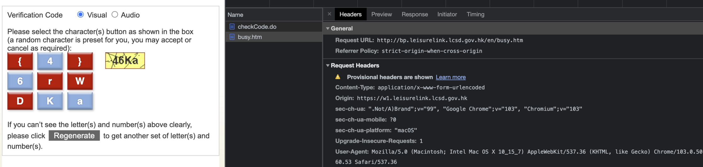The possible solution is to change the predefined JavaScript variables in webdriver which appear when running with Selenium (ref: javascript - Can a website detect when you are using Selenium with chromedriver? - Stack Overflow)
# CMD For update the predefined JavaScript vaiables
perl -pi -e 's/cdc_/akb_/g' /path/to/chromedriver
It still does not work when updated predefine javascript variables after due to the submit form being too quick. I tested that 2 seconds delay is good to skip the checking.
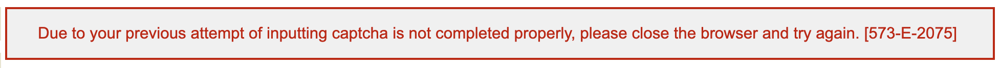The system will redirect to "dispatchFlow.do" page when submitting the challenge form. It needs the user to input their HKID, phone number, and five digital captcha challenge . The page is split into two frames using a frameset, including the logout frame (blue color) and the login frame (red color).
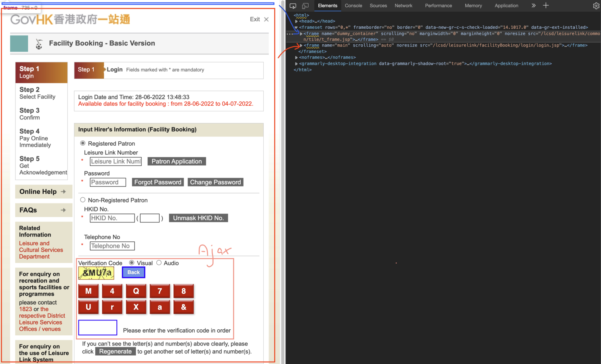If you find_element directly, the webdriver will throw the not found exception. It needs to switch to the main frame (red color) and wait for the ajax finish to request the captcha challenge.
driver.switch_to.frame(driver.find_element_by_xpath('/html/frameset/frame[@name="main"]')
WebDriverWait(driver, 10).until(
EC.presence_of_all_elements_located((By.CLASS_NAME, "kbkey"))
))
We can use the previous approach to convert the image to text. But the difference is that the character's order is important.
Click the Captcha Key Button:
driver.execute_script('''
let tmp_obj = {{}};
for(const ele of document.getElementsByClassName("kbkey")){{
tmp_obj[ele.innerText] = ele;
}};
for(const value of [{js_img_codes}]){{
if(value in tmp_obj)
tmp_obj[value].click();
else if (value.toLowerCase() in tmp_obj)
tmp_obj[value.toLowerCase()].click();
else if (value.toUpperCase() in tmp_obj)
tmp_obj[value.toUpperCase()].click();
}}
'''.format(js_img_codes=js_img_codes))
The following method is not suggested because sometimes the "mapv" is not defined, although this does not need to click the button.
for(const value of [{js_img_codes}]){{
if(value in mapv)
kbf += mapv[value];
else if (value.toLowerCase() in mapv)
kbf += mapv[value.toLowerCase()];
else if (value.toUpperCase() in mapv)
kbf += mapv[value.toUpperCase()]
}}
Furthermore, we can also utilize the JavaScript o input the HKID and phone number:
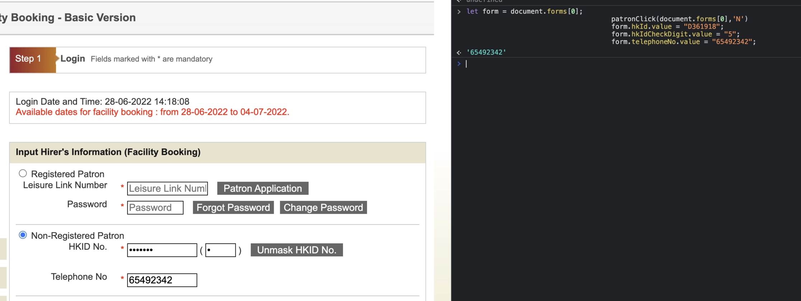driver.execute_script('''
let form = document.forms[0];
patronClick(document.forms[0],'N')
form.hkId.value = "D361918";
form.hkIdCheckDigit.value = "5";
form.telephoneNo.value = "65492342";
onSubmit(document.getElementsByTagName('form')[0]);
''');
Moreover, this form recommended 8 seconds as a delay time before submitting the form.
If you have some confusion about JavaScript, you can copy the JavaScript to the console and execute it in Developer Tools. The above method may not be the best, please feel free to share your idea to let me know. Thank you for your time.
part of Code (Python):
from jobs.job import Job
from jobs.lib.Image import Image
from jobs.lib.tesseract import use_lcsd_captcha
from selenium import webdriver
from selenium.webdriver.common.by import By
from selenium.webdriver.support import expected_conditions as EC
from selenium.webdriver.support.ui import WebDriverWait
import time
import uuid
def start(self)
driver: webdriver.Edge = get_driver()
driver.get(f"https://w1.leisurelink.lcsd.gov.hk/index/index.jsp;jsessionid={uuid.uuid1()}?lang=en")
driver.get("https://w1.leisurelink.lcsd.gov.hk/application/CheckChannelSuspension.do?applicationId=LCSD_11&language=en&country=US")
print("wait")
captcha_check = True
while captcha_check:
print("captcha check True")
WebDriverWait(driver, 300).until(
EC.presence_of_element_located((By.CLASS_NAME, "kbkey"))
)
captcha_img_element = driver.find_element_by_xpath("//*[@id='inputTextWrapper']/div/img")
captcha_img = Image.base64_uri_to_cv2_img(captcha_img_element.get_attribute("src"))
code_elements = driver.find_elements_by_xpath("//div[@class='kbLeftColumn'][1]//div[contains(@class, 'kbkey')]")
codes = [str(code.text) for code in code_elements]
print("codes", codes)
predict_img_code = use_lcsd_captcha(captcha_img, codes, size=4)
print("predict_img_code", predict_img_code)
if predict_img_code is None or len(predict_img_code) != 4:
print("regenerate_visual_captcha")
driver.execute_script("document.getElementsByClassName('kbLeftColumn')[0].innerHTML = ''; regenerate_visual_captcha()")
continue
print("return Code",predict_img_code)
driver.execute_script('''
for(const ele of document.getElementsByClassName("red_selected")){
ele.click();
}
''')
js_img_codes = ",".join([ f"'{c}'" for c in predict_img_code])
driver.execute_script('''
for(const ele of document.getElementsByClassName("kbkey")){{
if([{js_img_codes}].includes(ele.innerText)){{
ele.click();
}}
}}
'''.format(js_img_codes=js_img_codes))
time.sleep(2.12312)
driver.execute_script('''
const form = document.getElementById('huForm');
onSubmitForm(form);
form.submit();
''')
print("loading")
if "lcsd/leisurelink/dispatchFlow.do?" in driver.current_url:
captcha_check = False
# dispatchFlow (login)
login_captcha_check = True
print("dispatchFlow")
while login_captcha_check:
print("dispatchFlow wair")
print(driver.current_url)
WebDriverWait(driver, 300).until(
EC.url_contains("lcsd/leisurelink/dispatchFlow.do?")
)
driver.switch_to.frame(driver.find_element_by_xpath('/html/frameset/frame[@name="main"]'))
print("switched")
WebDriverWait(driver, 10).until(
EC.presence_of_all_elements_located((By.CLASS_NAME, "kbkey"))
)
print("point2 ")
try:
captcha_img_element = driver.find_element_by_xpath('//*[@id="inputTextWrapper"]/div/img')
captcha_img = Image.base64_uri_to_cv2_img(captcha_img_element.get_attribute("src"))
code_elements = driver.find_elements_by_xpath("//div[@id='virtualKeysWrapper']/div[contains(@class, 'kbkey')]")
codes = [str(code.text) for code in code_elements]
print("codes", codes)
predict_img_code = use_lcsd_captcha(captcha_img, codes, size=5)
print("predict_img_code", predict_img_code)
if predict_img_code is None or len(predict_img_code) != 5:
print("regenerate_visual_captcha")
driver.execute_script("document.getElementById('virtualKeyboardLarge').innerHTML='';regenerateCaptcha();")
driver.switch_to.parent_frame()
continue
print("predict_img_code", predict_img_code)
js_img_codes = ",".join([ f"'{c}'" for c in predict_img_code])
print("js_img_codes", js_img_codes)
driver.execute_script('''
let tmp_obj = {{}};
for(const ele of document.getElementsByClassName("kbkey")){{
tmp_obj[ele.innerText] = ele;
}};
for(const value of [{js_img_codes}]){{
if(value in tmp_obj)
tmp_obj[value].click();
else if (value.toLowerCase() in tmp_obj)
tmp_obj[value.toLowerCase()].click();
else if (value.toUpperCase() in tmp_obj)
tmp_obj[value.toUpperCase()].click();
}}
'''.format(js_img_codes=js_img_codes))
time.sleep(8)
driver.execute_script('''
let form = document.forms[0];
patronClick(document.forms[0],'N')
form.hkId.value = "D361918";
form.hkIdCheckDigit.value = "5";
form.telephoneNo.value = "65492342";
onSubmit(document.getElementsByTagName('form')[0]);
''');
if "lcsd/leisurelink/dispatchFlow.do?" in driver.current_url:
driver.switch_to.parent_frame()
else:
break
except Exception as e:
print(e)
print("regenerate_visual_captcha")
driver.execute_script("regenerateCaptcha();")
driver.switch_to.parent_frame():